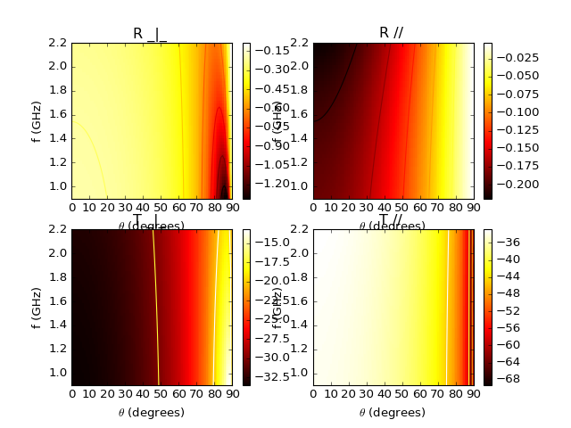

1 PyLayers Modules References¶
Contents
- 1 PyLayers Modules References
- 1.1 Environment Description
- 1.2 pylayers.gis.layout Module
- 1.3 Antennas and Propagation
- 1.4 pylayers.antprop.antenna Module
- 1.5 pylayers.antprop.aarray Module
- 1.6 pylayers.antprop.spharm Module
- 1.7 pylayers.antprop.antssh Module
- 1.8 pylayers.antprop.antvsh Module
- 1.9 Simulations
- 1.10 Localization Algorithms
- 1.11 Measurement Data
- 1.12 Instrumentation
- 1.13 Agents and Bodies Mobility
- 1.14 Networks
- 1.15 Physical Layer
- 1.16 Signal Processing
- 1.17 Utility classes and functions
1.2 pylayers.gis.layout Module¶
1.2.1 Functions¶
PolygonPatch(polygon, **kwargs) |
Constructs a matplotlib patch from a geometric object |
array(object[, dtype, copy, order, subok, ndmin]) |
Create an array. |
cascaded_union |
Returns the union of a sequence of geometries |
cpu_count() |
Returns the number of CPUs in the system |
outputGi_func(args) |
|
outputGi_func_test(args) |
|
pbar(verbose, **kwargs) |
|
read_gpickle(path) |
Read graph object in Python pickle format. |
urlopen(url[, data, timeout, cafile, ...]) |
|
write_gpickle(G, path[, protocol]) |
Write graph in Python pickle format. |
1.2.2 Classes¶
Layout([string, _filematini, _fileslabini, ...]) |
Handling Layout |
SelectL(L, fig, ax) |
Associates a Layout and a figure |

1.4 pylayers.antprop.antenna Module¶
This module handles antennas An antenna can be loaded from various file formats among
- .vsh2
- .vsh3
- .sh2
- .sh3
- .mat
- .trx
Antenna derives from Pattern
1.4.1 Examples¶
>>> import matplotlib.pyplot as plt
>>> from pylayers.antprop.antenna import *
>>> A = Antenna()
>>> fig,ax = A.plotG(fGHz=[2,3,4],plan='theta',angdeg=0)
1.4.2 Pattern Class¶
-
class
pylayers.antprop.antenna.Pattern¶ Class Pattern
MetaClass of Antenna
A pattern is evaluated with the 3 np.array parameters
theta phi fGHz
This class implements pattern methods. The name of a pattern method starts by p. Each pattern method has a unique dictionnary argument ‘param’
- If self.grid dimensions are
- Nt x Np x Nf
- else:
- Ndir x Nf
Methods
eval(**kwargs)evaluate pattern functions gain()calculates antenna gain help([letter, typ])generic help plotG(**kwargs)antenna plot gain in 2D radF()evaluate radiation fonction w.r.t polarization ssh([L, dsf])vsh([threshold])-
_Pattern__p3gpp(**kwargs)¶ 3GPP antenna pattern
Parameters: thtilt : theta tilt antenna
hpbwv : half power beamwidth v
hpbwh : half power beamwidth h
sllv : side lobe level
fbrh : front back ratio
gm :
pol : h | v | c
if pattern
Ft nth x nphi x nf Fp nth x nphi x nf
else
Ft ndir x nf (==nth, ==nph) Fp ndir x nf (==nth, ==nph)
-
_Pattern__pArray(**kwargs)¶ Array factor
Parameters: Sc : np.array
coupling S matrix
Notes
Nd : Number of directions Np : Number of points (antenna elements) Nf : Number of frequency Nb : Number of beams
-
_Pattern__pGauss(**kwargs)¶ Gauss pattern
Parameters: p0 : phi main lobe (0-2pi)
p3 : 3dB aperture angle
t0 : theta main lobe (0-pi)
t3 : 3dB aperture angle
TODO : finish implementation of polar
-
_Pattern__pHertz(**kwargs)¶ Hertz dipole
param = {‘param’:{‘le’:np.array([0,0,1])}} le unit vector defining the dipole orientation
-
_Pattern__pHuygens(**kwargs)¶ Huygens source
param : dict
le : direction of electric current n : normal to aperture
-
_Pattern__pOmni(**kwargs)¶ omnidirectional pattern
Parameters: param : dict
dictionnary of parameters + pol : string
‘t’| ‘p’
- GmaxdB : float
0
self.grid is used for switching between :
if True angular grid : nth x nph x nf if False direction : ndir x nf
-
_Pattern__paperture(**kwargs)¶ Aperture Pattern
Aperture in the (x,y) plane. Main lobe in theta=0 direction
polar indicates the orientation of the Electric field either ‘x’ or ‘y’
See theoretical background in :
http://www.ece.rutgers.edu/~orfanidi/ewa/ch18.pdf
Parameters: HPBW_x_deg : float
Half Power Beamwidth (degrees)
HPBW_y_deg : float
Half Power Beamwidth (degrees)
-
_Pattern__paperture2(**kwargs)¶ Aperture Pattern
Aperture in the (x,y) plane. Main lobe in theta=0 direction
polar indicates the orientation of the Electric field either ‘x’ or ‘y’
See theoretical background in :
http://www.ece.rutgers.edu/~orfanidi/ewa/ch18.pdf
Parameters: HPBW_x_deg : float
Half Power Beamwidth (degrees)
HPBW_y_deg : float
Half Power Beamwidth (degrees)
-
_Pattern__pazel(**kwargs)¶ Azimuth Elevation pattern from file
Parameters: filename : ANT filename
-
_Pattern__pcst(**kwargs)¶ read antenna in text format
-
_Pattern__pdipole(**kwargs)¶ dipole antenna along z axis
From Balanis (Formula 4.62(a))
\[F_{ heta}( heta,\phi) = \left[ \]rac{cosleft( rac{kl}{2}cos heta ight)- cosleft( rac{kl}{2} ight)}{sin heta} ight]
-
_Pattern__phorn(**kwargs)¶ Horn antenna
http://www.ece.rutgers.edu/~orfanidi/ewa/ch18.pdf (18.2)
Parameters: Half Power Beamwidth (degrees)
-
_Pattern__phplanesectoralhorn(**kwargs)¶ H plane sectoral horn
Parameters: rho1 : float
sector radius (meter)
a1 : float
aperture dimension along x (greatest value in meters)
b1 : float
aperture dimension along y (greatest value in meters)
Notes
Maximum gain in theta =0 Polarized along y axis (Jx=0,Jz=0)
-
_Pattern__psh3(**kwargs)¶ calculate pattern for sh3
-
_Pattern__pvsh1(**kwargs)¶ calculate pattern from VSH Coeffs (shape 1)
Parameters: theta : ndarray (1xNdir)
phi : ndarray (1xNdir)
k : int
frequency index
Returns: Ft , Fp
-
_Pattern__pvsh3(**kwargs)¶ calculate pattern from vsh3
-
_Pattern__pwireplate(**kwargs)¶ pattern wire plate antenna
-
eval(**kwargs)¶ evaluate pattern functions
Parameters: th: list
[]
ph: list
[]
pt : np.array (3,N)
pr : np.array (3,N)
azoffset : int (0)
Rfloor:bool
if true add gain value to reflected ray on the floor. values are append at the end of sqG.
fGHz:list
[]
nth: int
90
nph: int
181
first: boolean
True if first call (to define self.param)
grid: boolean
True for pattern mode, False for Ray Tracing mode
th0 : float
theta initial value
th1 : float
theta finale value
ph0 : float
phi initial value
ph1 : float
phi final value
Examples
>>> from pylayers.antprop.aarray import * >>> A0=Antenna('Omni',param={'pol':'t','GmaxdB':0}) >>> A1=Antenna('Gauss') >>> A2=Antenna('3gpp') >>> A3=ULArray() >>> A0.eval() >>> A1.eval() >>> A2.eval() >>> #A3.eval()
-
gain()¶ calculates antenna gain
Notes
\[G(\theta,\phi) = |F_{\theta}|^2 + |F_{\phi}|^2\]
-
plotG(**kwargs)¶ antenna plot gain in 2D
Parameters: fGHz : frequency
plan : ‘theta’ | ‘phi’ depending on the selected plan to be displayed
angdeg : phi or theta in degrees, if plan==’phi’ it corresponds to theta
GmaxdB : max gain to be displayed
polar : boolean
Returns: fig
ax
Examples
>>> import matplotlib.pyplot as plt >>> from pylayers.antprop.antenna import * >>> A = Antenna('defant.vsh3') >>> fig,ax = A.plotG(fGHz=[2,3,4],plan='theta',angdeg=0) >>> fig,ax = A.plotG(fGHz=[2,3,4],plan='phi',angdeg=90)
-
radF()¶ evaluate radiation fonction w.r.t polarization
self.pol : ‘t’ : theta , ‘p’ : phi n, ‘c’ : circular


1.4.3 Antenna Class¶
-
class
pylayers.antprop.antenna.Antenna(typ='Omni', **kwargs)¶ Attributes
name (Antenna name) nf (number of frequency) nth (number of theta) nph (number of phi) Ft (Normalized Ftheta (ntheta,nphi,nf)) Fp (Normalized Fphi (ntheta,nphi,nf)) sqG (square root of gain (ntheta,nphi,nf)) theta (theta base 1 x ntheta) phi (phi base 1 x phi) C (VSH Coefficients) Methods
info()gives info about antenna object show3([k, po, T, txru, typ, mode, silent])show3 geomview plot3d([k, typ, col])show 3D pattern in matplotlib vsh (calculates Vector Spherical Harmonics) Antenna trx file can be stored in various order natural : HFSS ncp : near filed chamber It is important when initializing an antenna object to be aware of the typ of trx file .trx (ASCII Vectorial antenna Pattern) F Phi Theta Fphi Ftheta -
Fsynth(theta=[], phi=[])¶ Perform Antenna synthesis
Parameters: theta : np.array
phi : np.array
call Antenna.Fpatt or Antenna.Fsynth3
Notes
The antenna pattern synthesis is done either from spherical harmonics coefficients or from an analytical expression of the radiation pattern.
-
Fsynth1(theta, phi)¶ calculate complex antenna pattern from VSH Coefficients (shape 1)
Parameters: theta : ndarray (1xNdir)
phi : ndarray (1xNdir)
k : int
frequency index
Returns: Ft , Fp
-
Fsynth2(theta, phi, typ='vsh')¶ pattern synthesis from shape 2 vsh coeff
Parameters: theta : array 1 x Nt
phi : array 1 x Np
pattern : boolean
default False
typ : string
{vsh | ssh}
Notes
Calculate complex antenna pattern from VSH Coefficients (shape 2) for the specified directions (theta,phi) theta and phi arrays needs to have the same size
-
Fsynth2b(theta, phi)¶ pattern synthesis from shape 2 vsh coefficients
Parameters: theta : 1 x Nt
phi : 1 x Np
Notes
Calculate complex antenna pattern from VSH Coefficients (shape 2) for the specified directions (theta,phi) theta and phi arrays needs to have the same size
-
Fsynth2s(dsf=1)¶ pattern synthesis from shape 2 vsh coefficients
Parameters: phi Notes
Calculate complex antenna pattern from VSH Coefficients (shape 2) for the specified directions (theta,phi) theta and phi arrays needs to have the same size
-
Fsynth3(theta=[], phi=[], typ='vsh')¶ synthesis of a complex antenna pattern from SH coefficients (vsh or ssh in shape 3)
Ndir is the number of directions
Parameters: theta : ndarray (1xNdir if not pattern) (1xNtheta if pattern)
phi : ndarray (1xNdir if not pattter) (1xNphi if pattern)
pattern : boolean
if True theta and phi are reorganized for building the pattern
typ : ‘vsh’ | ‘ssh’ | ‘hfss’
Returns: if self.grid:
Fth : ndarray (Ntheta x Nphi) Fph : ndarray (Ntheta x Nphi)
else:
Fth : ndarray (1 x Ndir) Fph : ndarray (1 x Ndir)
See also
pylayers.antprop.channel._vec2scalAExamples
>>> from pylayers.antprop.antenna import * >>> import numpy as np >>> import matplotlib.pylab as plt >>> A = Antenna('defant.vsh3') >>> F = A.eval(grid=True)All Br,Cr,Bi,Ci have the same (l,m) index in order to evaluate only once the V,W function
If the data comes from a cst file like the antenna used in WHERE1 D4.1 the pattern is multiplied by $frac{4pi}{120pi}=frac{1}{sqrt{30}$
-
cart2pol(Fx, Fy, Fz, ith)¶ converts Fx,Fy,Fz to Ftheta, Fphi for theta=ith
Parameters: Fx : np.array
Fy : np.array
Fz : np.array
ith : theta index
See also
-
checkpole(kf=0)¶ display the reconstructed field on pole for integrity verification
Parameters: kf : int
frequency index default 0
-
coeffshow(**kwargs)¶ display antenna coefficient
- typ : string
- ‘ssh’ |‘vsh’
L : maximum level kf : frequency index vmin : float vmax : float
-
elec_delay(tau)¶ apply an electrical delay
Parameters: tau : float
electrical delay in nanoseconds
Notes
This function applies an electrical delay math::exp{+2 j pi f tau) on the phase of diagram math::
F_{\theta}and math::F_{phi}Examples
>>> from pylayers.antprop.antenna import * >>> A = Antenna('S2R2.sh3') >>> A.eval() >>> tau = A.getdelay() >>> A.elec_delay(tau)
-
errel(kf=-1, dsf=1, typ='s3')¶ calculates error between antenna pattern and reference pattern
Parameters: kf : integer
frequency index. If k=-1 integration over all frequency
dsf : down sampling factor
typ :
Returns: errelTh : float
relative error on \(F_{\theta}\)
errelPh : float
relative error on \(F_{\phi}\)
errel : float
Notes
\[ \begin{align}\begin{aligned}\epsilon_r^{\theta} = \frac{|F_{\theta}(\theta,\phi)-\hat{F}_{\theta}(\theta,\phi)|^2} {|F_{\theta}(\theta,\phi)|^2}\\\epsilon_r^{\phi} = \frac{|F_{\phi}(\theta,\phi)-\hat{F}_{\phi}(\theta,\phi)|^2} {|F_{\theta}(\theta,\phi)|^2}\end{aligned}\end{align} \]
-
getdelay(delayCandidates=array([-10., -9.999, -9.998, ..., 9.997, 9.998, 9.999]))¶ get electrical delay
Parameters: delayCandidates : ndarray dalay in (ns)
default np.arange(-10,10,0.001)
Returns: electricalDelay : float
Author : Troels Pedersen (Aalborg University)
B.Uguen
-
info()¶ gives info about antenna object
-
initvsh(lmax=45)¶ Initialize a void vsh structure
Parameters: fGHz : array
lmax : int
level max
-
load_atoll(directory='ant')¶ load antenna from Atoll file
Atoll format provides Antenna gain given for the horizontal and vertical plane for different frequencies and different tilt values
Parameters: directory : string
The dictionnary attol is created
-
load_trx(directory='ant', nf=104, ntheta=181, nphi=90, ncol=6)¶ load a trx file (deprecated)
Parameters: directory : str
directory where is located the trx file (default : ant)
nf : float
number of frequency points
ntheta : float
number of theta
nphi : float
number of phi
TODO : DEPRECATED (Fix the Ft and Fp format with Nf as last axis)
-
loadhfss(lfa=[], Nt=72, Np=37)¶ load antenna from HFSS file
Parameters: lfa : list of antenna file
Nt : int
Number of angle theta
Np : int
Number of angle phi
Notes
One file per frequency point
th , ph , abs_grlz,th_absdB,th_phase,ph_absdB,ph_phase_ax_ratio
-
loadmat(directory='ant')¶ load an antenna stored in a mat file
Parameters: directory : str , optional
default ‘ant’
>>> import matplotlib.pyplot as plt >>> from pylayers.antprop.antenna import * >>> A = Antenna('S1R1.mat',directory='ant/UWBAN/Matfile') >>> f,a = A.plotG(plan='theta',angdeg=0) >>> f,a = A.plotG(plan='phi',angdeg=90,fig=f,ax=a) >>> txt = plt.title('S1R1 antenna : st loadmat') >>> plt.show()(Source code, png, hires.png, pdf)

-
loadsh2()¶ load spherical harmonics coefficient in shape 2
-
loadsh3()¶ Load antenna’s sh3 file
sh3 file contains a thesholded version of ssh coefficients in shape 3
-
loadtrx(directory)¶ load trx file (SATIMO Near Field Chamber raw data)
Parameters: directory
self._filename: short name of the antenna file
the file is seek in the $BASENAME/ant directory
.. todo:
consider using an ini file for the header
Trx header structure
fmin fmax Nf phmin phmax Nphi thmin thmax Ntheta #EDelay
0 1 2 3 4 5 6 7 8 9
1 10 121 0 6.19 72 0 3.14 37 0
-
loadvsh2()¶ load antenna from .vsh2 file format
Load antenna’s vsh2 file which only contains the vsh coefficients in shape 2
-
loadvsh3()¶ Load antenna’s vsh3 file
vsh3 file contains a thresholded version of vsh coefficients in shape 3
-
loadvsh3_old()¶ Load antenna vsh coefficients in shape 3
-
ls(typ='vsh3')¶ list the antenna files in antenna project directory
Parameters: typ : string optional
{‘mat’|’trx’|’vsh2’|’sh2’|’vsh3’|’sh3’}
Returns: lfile_s : list
sorted list of all the .str file of strdir
-
minsh3(emax=0.05)¶ Create antenna’s vsh3 file which only contains the significant vsh coefficients in shape 3, in order to obtain a reconstruction maximal error = emax
This function requires a reading of .trx file before being executed
Parameters: emax : float
error default 0.05
-
movie_vsh(mode='linear')¶ animates vector spherical coeff w.r.t frequency
Parameters: mode : string
‘linear’ |
-
mse(Fth, Fph, N=0)¶ mean square error between original and reconstructed
Parameters: Fth : np.array
Fph : np.array
N : int
Notes
Calculate the relative mean square error between original pattern A.Ftheta , A.Fphi and the pattern given as argument of the function Fth , Fph
The mse is evaluated on both polarization and normalized over the energy of each original pattern.
The function returns the maximum between those two errors
N is a parameter which allows to suppress value at the pole for the calculation of the error if N=0 all values are kept else N < n < Nt - N
-
pattern(theta=[], phi=[], typ='s3')¶ return multidimensionnal radiation patterns
Parameters: theta : array
1xNt
phi : array
1xNp
typ : string
{s1|s2|s3}
-
photo(directory='')¶ show a picture of the antenna
Parameters: directory : string
-
plot3d(k=0, typ='Gain', col=True)¶ show 3D pattern in matplotlib
Parameters: k : frequency index
typ = ‘Gain’
= ‘Ftheta’ = ‘Fphi’
if col -> color coded plot3D
else -> simple plot3D
-
pol2cart(ith)¶ converts FTheta, FPhi to Fx,Fy,Fz for theta=ith
Parameters: ith : theta index
Returns: Fx
Fy
Fz
See also
-
pol3d(k=0, R=50, St=4, Sp=4, silent=False)¶ Display polarisation diagram in 3D
Parameters: k : int
frequency index
R : float
radius of the sphere
St : int
downsampling factor along theta
Sp : int
downsampling factor along phi
silent : Boolean
(if True the file is created and not displayed’)
The file created is named : Polar{ifreq}.list
it is placed in the /geom directory of the project
-
savesh2()¶ save coeff in .sh2 antenna file
-
savesh3()¶ save antenna in sh3 format
create a .sh3 antenna file
-
savevsh2(filename='')¶ save coeff in a .vsh2 antenna file
Parameters: filename : string
-
savevsh3()¶ save antenna in vsh3 format
Create a .vsh3 antenna file
-
show3(k=0, po=[], T=[], txru=0, typ='G', mode='linear', silent=False)¶ show3 geomview
Parameters: k : frequency index
po : poition of the antenna
T : GCS of the antenna
typ : string
‘G’ | ‘Ft’ | ‘Fp’
mode : string
‘linear’| ‘not implemented’
silent : boolean
True | False
Examples
>>> from pylayers.antprop.antenna import * >>> import numpy as np >>> import matplotlib.pylab as plt >>> A = Antenna('defant.sh3') >>> #A.show3()
-
1.4.4 Functions¶
AFLegendre(N, M, x) |
calculate Pmm1n and Pmp1n |
AFLegendre2(L, M, x) |
calculate Pmm1l and Pmp1l |
AFLegendre3(L, M, x) |
calculate Pmm1l and Pmp1l |
BeamGauss(theta, phi[, Gmax, HPBW_az, ...]) |
Beam with a Gaussian shape |
CartToSphere(theta, phi, ex, ey, ez[, ...]) |
Convert from Cartesian to Spherical |
F0(nu, sigma) |
F0 function for horn antenna pattern |
F1(nu, sigma) |
F1 function for horn antenna pattern |
RepAzimuth1(Ec, theta, phi[, th, typ]) |
response in azimuth |
SSHFunc(L, theta, phi) |
ssh function |
SSHFunc2(L, theta, phi) |
ssh function version 2 |
VW(l, m, theta, phi) |
evaluate vector Spherical Harmonics basis functions |
VW0(n, m, x, phi, Pmm1n, Pmp1n) |
evaluate vector Spherical Harmonics basis functions |
VW2(l, m, x, phi, Pmm1l, Pmp1l) |
evaluate vector Spherical Harmonics basis functions |
cformat(x, y, **kwargs) |
complex format |
compdiag(k, A, th, ph, Fthr, Fphr[, typ, ...]) |
makes comparison between original pattern and reconstructed pattern |
cylinder(fig, pa, pb, R) |
plot a cylinder |
displot(pt, ph[, arrow]) |
discontinuous plot |
factorial(n[, exact]) |
The factorial of a number or array of numbers. |
forcesympol(A) |
plot VSH transform vsh basis in 3D plot |
index_vsh(L, M) |
vector spherical harmonics indexing |
indexssh(L[, mirror]) |
create [l,m] indexation from Lmax |
indexvsh(L) |
calculate index of vsh |
level_energy(A, l[, ifreq, L]) |
calculates energy of the level l |
lmreshape(coeff[, L]) |
level and mode reshaping |
make_axes_locatable(axes) |
|
modeMax(coeff[, L, ifreq]) |
calculates maximal mode |
mode_energy(C, M[, L, ifreq]) |
calculates mode energy |
mode_energy2(A, m[, ifreq, L]) |
calculates mode energy (version 2) |
mulcplot(x, y, **kwargs) |
handling multiple complex variable plots |
plotVW(l, m, theta, phi[, sf]) |
plot VSH transform vsh basis in 3D plot |
pol3D(fig, rho, theta, phi[, sf, shade, title]) |
polar 3D surface plot |
polycol(lpoly[, var]) |
plot a collection of polygon |
rc(group, **kwargs) |
Set the current rc params. |
rectplot(x, xpos[, ylim]) |
plot rectangles on an axis |
relative_error(Eth_original, Eph_original, ...) |
calculate relative error between original and model |
shadow(data, ax) |
data : np.array |
show3D(F, theta, phi, k[, col]) |
show 3D matplotlib diagram |
ssh(A[, L, dsf]) |
This function calculates the Scalar Spherical Harmonics coefficients |
sshModel(c, d[, L]) |
calculates sshModel |
vsh(A[, dsf]) |
This function calculates the Vector Spherical Harmonics coefficients |
zeros(shape[, dtype, order]) |
Return a new array of given shape and type, filled with zeros. |
1.4.5 Classes¶
AntPosRot(name, p, T) |
Antenna + position + Rotation |
Antenna([typ]) |
Attributes |
FontProperties([family, style, variant, ...]) |
A class for storing and manipulating font properties. |
MaxNLocator(*args, **kwargs) |
Select no more than N intervals at nice locations. |
Pattern() |
Class Pattern |
PolyCollection(verts[, sizes, closed]) |
Attributes |
PyLayers |
Generic PyLayers Meta Class |
SCoeff([typ, fmin, fmax, lmax, data, dtype, ...]) |
scalar Spherical Harmonics coefficients |
SSHCoeff(Cx, Cy, Cz) |
scalar spherical harmonics |
VCoeff(typ[, fmin, fmax, data, dtype, ind, ...]) |
Spherical Harmonics Coefficient |
VSHCoeff(Br, Bi, Cr, Ci) |
Vector Spherical Harmonics Coefficients class |
VectorCoeff(typ[, fmin, fmax, data, dtype, ...]) |
class vector spherical harmonics |

1.5 pylayers.antprop.aarray Module¶
1.5.1 Functions¶
k2xyz(ik, sh) |
|
||
weights(nx, nz, kx, kz, Kx, Kz) |
Practical Demonstration of Limited Feedback Beamforming for mmWave Systems | ||
xyztok(iz, iy, ix[, Nx, Ny]) |

1.6 pylayers.antprop.spharm Module¶
This module handles Scalar and Vector Spherical Harmonics in PyLayers
1.6.2 class SSHCoeff¶
-
class
pylayers.antprop.spharm.SSHCoeff(Cx, Cy, Cz)¶ scalar spherical harmonics
Attributes
Cx (coefficient for x axis) Cy (coefficient for y axis) Cz (coefficient for z axis) Methods
help([letter, typ])generic help s2tos3([threshold])convert scalar spherical coefficients from shape 2 to shape 3 sets3(Cx, Cy, Cz)set shape 3 -
s2tos3(threshold=-1)¶ convert scalar spherical coefficients from shape 2 to shape 3
Parameters: threshold : float
default 1e-5
Notes
s3 corresponds to energy thresholded coefficients
-
sets3(Cx, Cy, Cz)¶ set shape 3
Parameters: Cx : SCoeff
Cy : SCoeff
Cz : SCoeff
-
1.6.3 class SCoeff¶
-
class
pylayers.antprop.spharm.SCoeff(typ='s2', fmin=0.6, fmax=6, lmax=20, data=array([], dtype=float64), ind=array([], dtype=float64), k=array([], dtype=float64))¶ scalar Spherical Harmonics coefficients
d = np.array [Nf,N+1,M+1]
Attributes
s2 shape 2 np.array [ Nf x (N+1)*(M+1) ] s3 shape 3 np.array [ Nf x K ] ind [ K x 2] Methods
delete(ind, typ)delete coeff delete3(ind)delete coeff.s3 help([letter, typ])generic help inits2(data, ind)initialize shape 2 format inits3(data, ind, k)initialize shape 3 format plot([typ, title, xl, yl, log, stem, color])plot coeff put(typ)recover last deleted coeff put3(i, i3)function put3 s3tos2()transform shape3 to shape 2 show([typ, k, L, M, kmax, seuildb, titre, ...])show coeff -
delete(ind, typ)¶ delete coeff
Parameters: ind : int
typ : int
2 shape 2 (Nf , N*M ) 3 shape 3 (Nf , K ) T ( K x 2 )
-
delete3(ind)¶ delete coeff.s3
Parameters: ind : int
-
inits2(data, ind)¶ initialize shape 2 format
Parameters: data : shape 2 data
ind : np.array
index for shape 2
-
inits3(data, ind, k)¶ initialize shape 3 format
Parameters: data : shape 3 data
ind : shape 3 indexing
k : k
-
plot(typ='s3', title='', xl=False, yl=False, log=False, stem=True, color='b')¶ plot coeff
Parameters: typ : string
‘s3’
title
xl
yl
log
stem: boolean
color
-
put(typ)¶ recover last deleted coeff
Parameters: typ : int
2 : shape 2 (Nf , N*M ) 3 : shape 3 (Nf , K ) T ( K x 2 )
-
put3(i, i3)¶ function put3
Parameters: i : int
i3 : int
-
s3tos2()¶ transform shape3 to shape 2
s2 shape 2 array [ Nf x (L+1)*(M+1) ] s3 shape 3 array [ Nf x K ] ind [ K x 2]
Notes
The shape of s2 is (Lmax+1)*(Lmax+2)/2
k2 : is the list of conserved indices in shape 3 ind3 : np.array (K3, 2) are the conserved (l,m) indices
ind3 and k2 have one common dimension
-
show(typ='s1', k=0, L=-1, M=-1, kmax=1000, seuildb=50, titre='SHC', xl=True, yl=True, fontsize=14, dB=True, cmap=<matplotlib.colors.LinearSegmentedColormap object>, anim=True)¶ show coeff
Parameters: typ : string
default (‘s1’) ‘s1’ shape 1 (Nf , L , M ) ‘s2’ shape 2 (Nf , L*M ) ‘s3’ shape 3 (Nf , K ) and ( K x 2 )
k : integer
frequency index default 0
N, M = maximal value for degree, mode respectively
(not to be defined if ‘s2’ or ‘s3’)
-
1.6.5 class VSHCoeff¶
-
class
pylayers.antprop.spharm.VSHCoeff(Br, Bi, Cr, Ci)¶ Vector Spherical Harmonics Coefficients class
Notes
Br = VCoeff(br) Bi = VCoeff(bi) Cr = VCoeff(cr) Ci = VCoeff(ci)
C = VSHCoeff(Br,Bi,Cr,Ci)
Attributes
Bi Br Ci Cr Methods
drag3(Emin)thresholded coefficient conversion energy([typ])returns aggregated energy over all coefficients plot([typ, titre, log, stem, subp])plot coeff put3(i, i3)put 3 s1tos2([L2])convert shape 1 to shape 2 s2tos3([threshold])convert vector spherical coefficients from shape 2 to shape 3 s2tos3_new(k)convert vector spherical coefficient from shape 2 to shape 3 s3tos2()shape 3 to shape 2 show([typ, k, N, M, kmax, seuildb, animate, ...])show VSH coeff strip3()Thresholded coefficient conversion -
drag3(Emin)¶ thresholded coefficient conversion
Parameters: Emin : Minimum energy
-
energy(typ='s1')¶ returns aggregated energy over all coefficients
Parameters: typ : string
{‘s1’|’s2’|’s3’}
Returns: E : np.array in the same shape as typ
s1 : (f,l,m) s2 : (f,l*m) s3 : (f,ncoeff<lm)
-
plot(typ='s3', titre='titre', log=False, stem=True, subp=True)¶ plot coeff
Parameters: typ
titre
log
stem
subp
-
put3(i, i3)¶ put 3
Parameters: i : int
i3 : int
-
s1tos2(L2=-1)¶ convert shape 1 to shape 2
shape 1 array [ Nf x (L+1) x (M+1) ] shape 2 array [ Nf x (L+1)*(M+1) ]
Parameters: L2 : max level
default (-1 means all values)
-
s2tos3(threshold=-1)¶ convert vector spherical coefficients from shape 2 to shape 3
Parameters: threshold : float
default 1e-20
Energy thresholded coefficients
-
s2tos3_new(k)¶ convert vector spherical coefficient from shape 2 to shape 3
Parameters: k : number of coeff
-
s3tos2()¶ shape 3 to shape 2
-
show(typ='s1', k=1, N=-1, M=-1, kmax=1000, seuildb=50, animate=False, titre='')¶ show VSH coeff
Parameters: typ : str
{‘s1’,’s2’,’s3’}
k : int
frequency index
kmax : int
maximum of the unfolded coefficient axes
N : int
M : int
seuildB : float
animate : boolean
default False
-
strip3()¶ Thresholded coefficient conversion
The s3 minimum energy coefficient is deleted
Returns: ind : int
ind3 : int
-
1.6.6 Utility Functions¶
indexssh(L[, mirror]) |
create [l,m] indexation from Lmax |
indexvsh(L) |
calculate index of vsh |
index_vsh(L, M) |
vector spherical harmonics indexing |
AFLegendre3(L, M, x) |
calculate Pmm1l and Pmp1l |
AFLegendre2(L, M, x) |
calculate Pmm1l and Pmp1l |
AFLegendre(N, M, x) |
calculate Pmm1n and Pmp1n |
VW2(l, m, x, phi, Pmm1l, Pmp1l) |
evaluate vector Spherical Harmonics basis functions |
VW(l, m, theta, phi) |
evaluate vector Spherical Harmonics basis functions |
VW0(n, m, x, phi, Pmm1n, Pmp1n) |
evaluate vector Spherical Harmonics basis functions |
plotVW(l, m, theta, phi[, sf]) |
plot VSH transform vsh basis in 3D plot |
1.6.7 Functions¶
AFLegendre(N, M, x) |
calculate Pmm1n and Pmp1n |
AFLegendre2(L, M, x) |
calculate Pmm1l and Pmp1l |
AFLegendre3(L, M, x) |
calculate Pmm1l and Pmp1l |
VW(l, m, theta, phi) |
evaluate vector Spherical Harmonics basis functions |
VW0(n, m, x, phi, Pmm1n, Pmp1n) |
evaluate vector Spherical Harmonics basis functions |
VW2(l, m, x, phi, Pmm1l, Pmp1l) |
evaluate vector Spherical Harmonics basis functions |
cformat(x, y, **kwargs) |
complex format |
cylinder(fig, pa, pb, R) |
plot a cylinder |
displot(pt, ph[, arrow]) |
discontinuous plot |
factorial(n[, exact]) |
The factorial of a number or array of numbers. |
index_vsh(L, M) |
vector spherical harmonics indexing |
indexssh(L[, mirror]) |
create [l,m] indexation from Lmax |
indexvsh(L) |
calculate index of vsh |
mulcplot(x, y, **kwargs) |
handling multiple complex variable plots |
plotVW(l, m, theta, phi[, sf]) |
plot VSH transform vsh basis in 3D plot |
pol3D(fig, rho, theta, phi[, sf, shade, title]) |
polar 3D surface plot |
polycol(lpoly[, var]) |
plot a collection of polygon |
rc(group, **kwargs) |
Set the current rc params. |
rectplot(x, xpos[, ylim]) |
plot rectangles on an axis |
shadow(data, ax) |
data : np.array |
1.6.8 Classes¶
FontProperties([family, style, variant, ...]) |
A class for storing and manipulating font properties. |
PolyCollection(verts[, sizes, closed]) |
Attributes |
PyLayers |
Generic PyLayers Meta Class |
SCoeff([typ, fmin, fmax, lmax, data, dtype, ...]) |
scalar Spherical Harmonics coefficients |
SSHCoeff(Cx, Cy, Cz) |
scalar spherical harmonics |
VCoeff(typ[, fmin, fmax, data, dtype, ind, ...]) |
Spherical Harmonics Coefficient |
VSHCoeff(Br, Bi, Cr, Ci) |
Vector Spherical Harmonics Coefficients class |
VectorCoeff(typ[, fmin, fmax, data, dtype, ...]) |
class vector spherical harmonics |

{kind=link}
{kind=link}
{kind=link}
{kind=link}
{kind=link}
{kind=link}
1.7 pylayers.antprop.antssh Module¶
1.7.1 Scalar Spherical Harmonics Functions¶
SSHFunc(L, theta, phi) |
ssh function |
SSHFunc2(L, theta, phi) |
ssh function version 2 |
SphereToCart(theta, phi, eth, eph, bfreq) |
Spherical to Cartesian |
CartToSphere(theta, phi, ex, ey, ez[, ...]) |
Convert from Cartesian to Spherical |
1.7.2 Functions¶
AFLegendre(N, M, x) |
calculate Pmm1n and Pmp1n |
AFLegendre2(L, M, x) |
calculate Pmm1l and Pmp1l |
AFLegendre3(L, M, x) |
calculate Pmm1l and Pmp1l |
CartToSphere(theta, phi, ex, ey, ez[, ...]) |
Convert from Cartesian to Spherical |
SSHFunc(L, theta, phi) |
ssh function |
SSHFunc2(L, theta, phi) |
ssh function version 2 |
SphereToCart(theta, phi, eth, eph, bfreq) |
Spherical to Cartesian |
VW(l, m, theta, phi) |
evaluate vector Spherical Harmonics basis functions |
VW0(n, m, x, phi, Pmm1n, Pmp1n) |
evaluate vector Spherical Harmonics basis functions |
VW2(l, m, x, phi, Pmm1l, Pmp1l) |
evaluate vector Spherical Harmonics basis functions |
cformat(x, y, **kwargs) |
complex format |
cylinder(fig, pa, pb, R) |
plot a cylinder |
displot(pt, ph[, arrow]) |
discontinuous plot |
factorial(n[, exact]) |
The factorial of a number or array of numbers. |
index_vsh(L, M) |
vector spherical harmonics indexing |
indexssh(L[, mirror]) |
create [l,m] indexation from Lmax |
indexvsh(L) |
calculate index of vsh |
mulcplot(x, y, **kwargs) |
handling multiple complex variable plots |
plotVW(l, m, theta, phi[, sf]) |
plot VSH transform vsh basis in 3D plot |
pol3D(fig, rho, theta, phi[, sf, shade, title]) |
polar 3D surface plot |
polycol(lpoly[, var]) |
plot a collection of polygon |
rc(group, **kwargs) |
Set the current rc params. |
rectplot(x, xpos[, ylim]) |
plot rectangles on an axis |
shadow(data, ax) |
data : np.array |
ssh(A[, L, dsf]) |
This function calculates the Scalar Spherical Harmonics coefficients |
1.8 pylayers.antprop.antvsh Module¶
vsh(A[, dsf]) |
This function calculates the Vector Spherical Harmonics coefficients |
1.8.1 Functions¶
AFLegendre(N, M, x) |
calculate Pmm1n and Pmp1n |
AFLegendre2(L, M, x) |
calculate Pmm1l and Pmp1l |
AFLegendre3(L, M, x) |
calculate Pmm1l and Pmp1l |
VW(l, m, theta, phi) |
evaluate vector Spherical Harmonics basis functions |
VW0(n, m, x, phi, Pmm1n, Pmp1n) |
evaluate vector Spherical Harmonics basis functions |
VW2(l, m, x, phi, Pmm1l, Pmp1l) |
evaluate vector Spherical Harmonics basis functions |
cformat(x, y, **kwargs) |
complex format |
cylinder(fig, pa, pb, R) |
plot a cylinder |
displot(pt, ph[, arrow]) |
discontinuous plot |
factorial(n[, exact]) |
The factorial of a number or array of numbers. |
index_vsh(L, M) |
vector spherical harmonics indexing |
indexssh(L[, mirror]) |
create [l,m] indexation from Lmax |
indexvsh(L) |
calculate index of vsh |
mathtogeo(reverseLatitude, standardShape, ...) |
|
mulcplot(x, y, **kwargs) |
handling multiple complex variable plots |
plotVW(l, m, theta, phi[, sf]) |
plot VSH transform vsh basis in 3D plot |
pol3D(fig, rho, theta, phi[, sf, shade, title]) |
polar 3D surface plot |
polycol(lpoly[, var]) |
plot a collection of polygon |
rc(group, **kwargs) |
Set the current rc params. |
rectplot(x, xpos[, ylim]) |
plot rectangles on an axis |
shadow(data, ax) |
data : np.array |
vsh(A[, dsf]) |
This function calculates the Vector Spherical Harmonics coefficients |
1.9 Simulations¶
This section describes the different simulation modules for using PyLayers.
1.10 Localization Algorithms¶
- pylayers.location.geometric.constraints.cla
- pylayers.location.geometric.constraints.constraint
- pylayers.location.geometric.constraints.exclude
- pylayers.location.geometric.constraints.rss
- pylayers.location.geometric.constraints.tdoa
- pylayers.location.geometric.constraints.toa
- pylayers.location.geometric.util.CDF2
- pylayers.location.geometric.util.boxn
- pylayers.location.geometric.util.geomview
- pylayers.location.geometric.util.model
- pylayers.location.geometric.util.scene
- pylayers.location.geometric.Scenario_base
1.13 Agents and Bodies Mobility¶
1.17 Utility classes and functions¶
- pylayers.util.CDF
- pylayers.util.cone
- pylayers.util.geomutil
- pylayers.util.graphutil
- pylayers.util.mayautil
- pylayers.util.plotutil
- pylayers.util.project
- pylayers.util.pydb
- pylayers.util.pymysqldb
- pylayers.util.pyutil
- pylayers.util.pyutil.delay
- pylayers.util.pyutil.lt2idic
- pylayers.util.pyutil.getlong
- pylayers.util.pyutil.getshort
- pylayers.util.pyutil.getdir
- pylayers.util.pyutil.shp
- pylayers.util.pyutil.dimcmp
- pylayers.util.pyutil.tstincl
- pylayers.util.pyutil.ininter
- pylayers.util.pyutil.cshift
- pylayers.util.pyutil.LegFunc
- pylayers.util.pyutil.ExpFunc
- pylayers.util.pyutil.InvFunc
- pylayers.util.pyutil.PowFunc
- pylayers.util.pyutil.randcol
- pylayers.util.pyutil.coldict
- pylayers.util.pyutil.createtrxfile
- pylayers.util.pyutil.rgb
- pylayers.util.pyutil.nbint
- pylayers.util.pyutil.encodmtlb
- pylayers.util.pyutil.sqrte
- pylayers.util.pyutil.untie
- pylayers.util.pyutil.corrcy
- pylayers.util.pyutil.foo
- pylayers.util.pyutil.cdf
- pylayers.util.pyutil.bitreverse
- pylayers.util.pyutil.timestamp
- pylayers.util.pyutil.writemeca
- pylayers.util.pyutil.writenet
- pylayers.util.pyutil.writenode
- pylayers.util.pyutil.writeDetails
- pylayers.util.pyutil.zipd
- pylayers.util.pyutil.unzipd
- pylayers.util.pyutil.unzipf
- pylayers.util.pyutil.rotate_line
- pylayers.util.pyutil.extract_block_diag
- pylayers.util.pyutil.fill_block_diag
- pylayers.util.pyutil.fill_block_diagMDA
- pylayers.util.pyutil.has_colours
- pylayers.util.pyutil.printout
- pylayers.util.pyutil.in_ipynb
- pylayers.util.save
- pylayers.util.utilnet
- pylayers.util.vect
- pylayers.util.versions